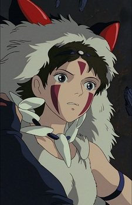
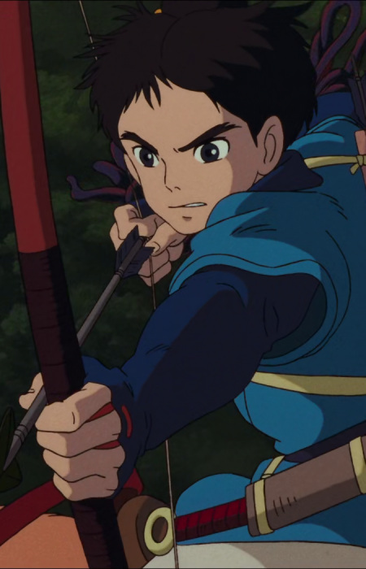

Year: 1984
Duration: 117 min
Directed By: Hayao Miyazaki
Produced By: Isao Takahata
Warrior and pacifist Princess Nausicaä desperately struggles to prevent two warring nations from destroying themselves and their dying planet.
Main Characters

San
San is known as Princess Mononoke, the 17-year-old girl, princess of spirits and beasts. When San was a baby, her parents, along with some other travelers, were attacked by the wolf goddess Moro.

Ashitaka
A prince of the Emishi tribe, Ashitaka is cursed in combat with a demonic boar. His only hope for a cure is to return to the forested land from which the boar-god originally came and discover what rage infected it.